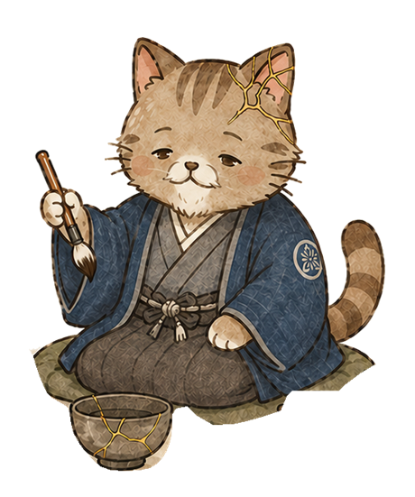

Cotonoha
ことのは
Law and language — gently, gladly, and a little deeper.
Are we able to use words safely?
Law and language both exist
to look after us, and the people near us.
Both can make a life a little easier to live.
We would like to take care of both, so that the world stays a gentler place.
If you leave here carrying a little less than you came with, that is enough.
Seven Japanese words, each with its meaning and a quiet line of our own.
Printable wall art, sized for an 8x10 frame.
Writing and broadcasting about everyday law — what a contract does, what happens when words cause harm. In Japanese.
Japanese words that English has not settled on yet — natsukashii, komorebi, ma — carried out with their meaning intact.

A small spirit born from a contract, in the library in the Cotonoha forest. Soft to look at, and rather direct when it matters.

The teacher. A cat mended with gold, who keeps a quiet eye on the rabbit and says very little.